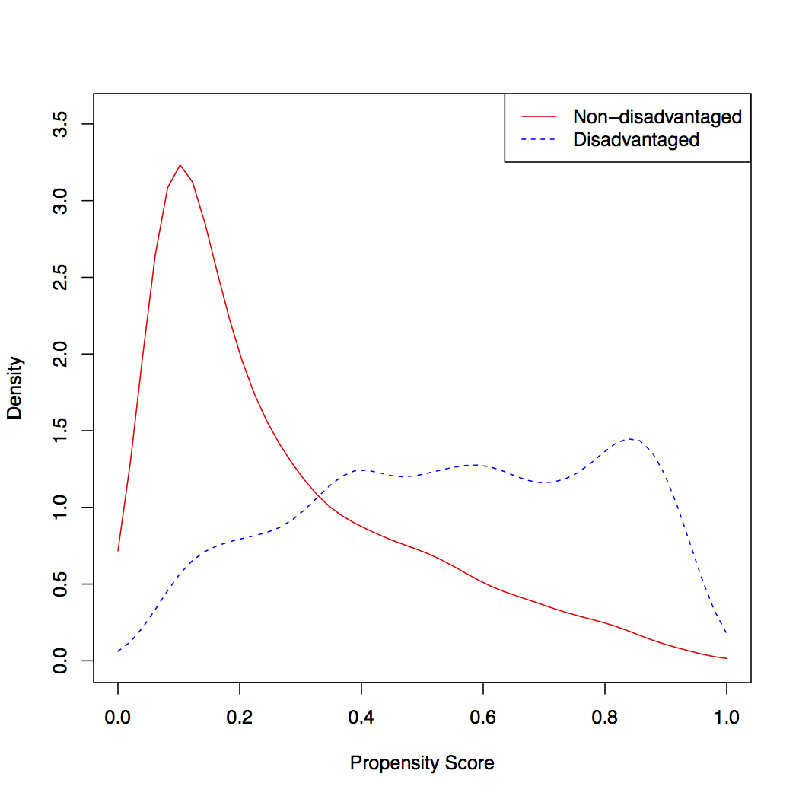
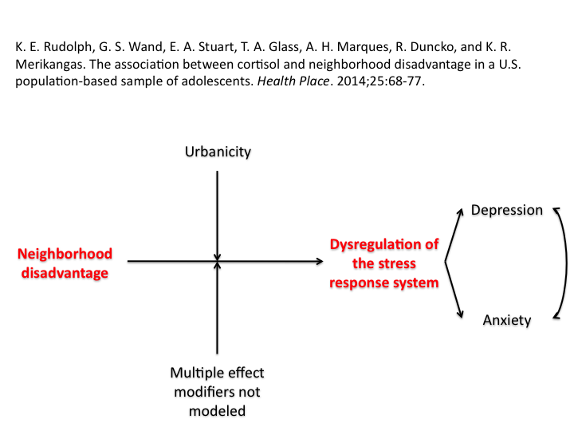
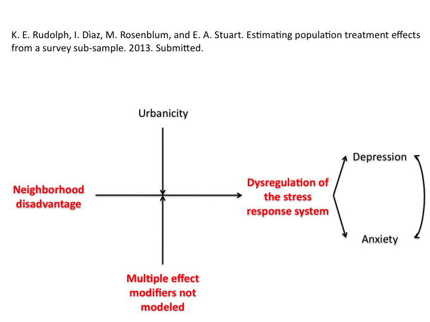
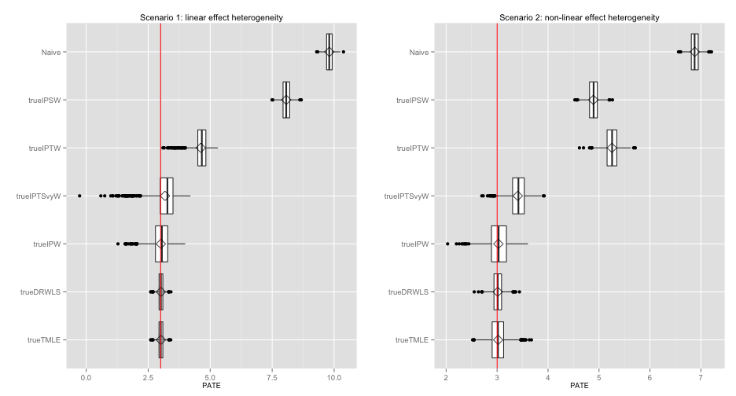

Agenda
- Motivation
- Dissertation overview
- Presentation of results
- Discussion
Kara Rudolph

National Comorbidity Survey Replication Adolescent Supplment (NCS-A). Merikangas et al., 2010
Missed school and sociodevelopmental opportunities \(\rightarrow\)






Relationship between neighborhood sources of stress and cortisol levels is complex

| Challenge | Approach |
|---|---|
| Not at-risk for a cortisol response | Restrictive exclusion criteria |
| Blunting | Sensitivity analysis |
| Heterogeneity by CAR/ post-CAR | Restricted to post-CAR |
| Diurnal rhythm | PS with Mahalanobis matching |
| Other strong predictors | PS with exact matching |


Problem raised in Aim 2:
Need to control for:




Neighborhood disadvantage as exposure
Cortisol as outcome